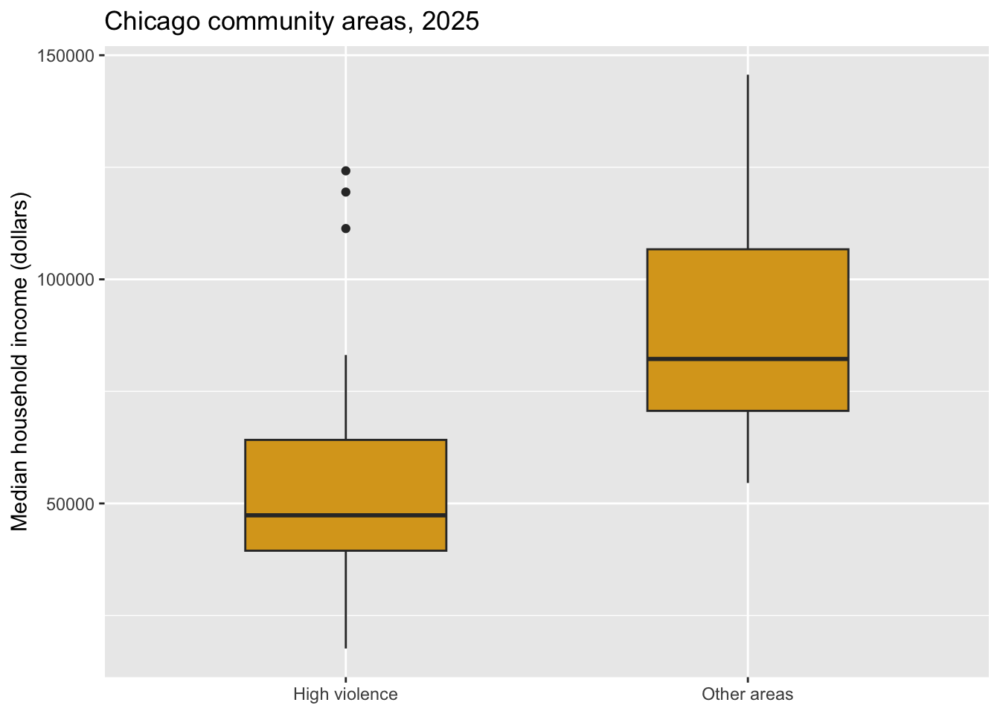

library(tidyverse)
source("https://smourtgos.github.io/crju705/R/bayes.R") # gives you bayes_prop_test()
set.seed(705)
rossi <- read_csv("https://smourtgos.github.io/crju705/data/rossi.csv",
show_col_types = FALSE)
arrests <- read_csv("https://smourtgos.github.io/crju705/data/toronto-arrests.csv",
show_col_types = FALSE)
areas <- read_csv("https://smourtgos.github.io/crju705/data/chicago-areas.csv",
show_col_types = FALSE)
shootings <- read_csv("https://raw.githubusercontent.com/washingtonpost/data-police-shootings/master/v2/fatal-police-shootings-data.csv",
show_col_types = FALSE)Demo Walkthrough · Session 7
Four real criminal justice questions, one recipe: count, test, say it
What this page is. The Session 7 lecture, written down step by step. Every chunk below is self-contained: copy any of them into your own R session and it runs as-is. Use this page to catch up after a missed class, or to re-run the examples at your own pace.
What you’ll build
Four answers to four real questions, each with the same recipe:
-
Question. Name the two groups and the outcome. A yes/no outcome means
prop.test()andbayes_prop_test(); a number meanst.test(). - Count or describe.
- Test.
- Say it. The honest sentence, how big in real units, and one thing the test cannot tell you.
The questions: did financial aid at release lower re-arrest? Were employed arrestees released more often? How much lower is income in Chicago’s high-violence areas? Was body camera footage reported more often in fatal police shootings after 2020?
Setup
The tidyverse, the course’s Bayesian function, and four datasets. Two of them are new to you and live on the course site; one is our Chicago anchor data; one comes straight from the Washington Post.
More about each dataset, and four more like them, is on the Final-Project Data Options page.
1 · Reentry: does money at release keep people out of jail?
432 men released from Maryland state prisons in the 1970s were followed for one year. Half were randomly assigned to receive financial aid (fin). The outcome is arrest: 1 if arrested again within the year. One row is one man.
rossi |> count(fin, arrest)# A tibble: 4 × 3
fin arrest n
<chr> <dbl> <int>
1 no 0 150
2 no 1 66
3 yes 0 168
4 yes 1 48Aid: 48 re-arrested out of 48 + 168 = 216 (22.2%). No aid: 66 out of 66 + 150 = 216 (30.6%). Aid goes first, so every difference reads Aid minus No aid.
2-sample test for equality of proportions with continuity correction
data: c(48, 66) out of c(216, 216)
X-squared = 3.4439, df = 1, p-value = 0.06349
alternative hypothesis: two.sided
95 percent confidence interval:
-0.170713151 0.004046484
sample estimates:
prop 1 prop 2
0.2222222 0.3055556 The interval runs from about 17 points lower to 0.4 points higher, and p = 0.063. Zero is just inside, so: fail to reject the null. A funder who reads only that line cuts the program.
Bayesian test of two proportions
data, group 1: 48 of 216 (22.2%)
data, group 2: 66 of 216 (30.6%)
prior: know-nothing (1 yes, 1 no), same for both groups
estimate 95% credible interval
group 1 22.5% 17.2% to 28.2%
group 2 30.7% 24.8% to 37.0%
difference (1 minus 2) -8.2 points -16.5 to 0.0 points
Probability group 1 is higher than group 2: 0.03
Probability group 1 is lower than group 2: 0.97 Say it. Given these data, there is about a 97% probability that men who got aid were re-arrested at a lower rate. About 22 of every 100 men with aid were re-arrested, against about 31 of every 100 without: roughly 8 fewer re-arrests per 100 people released. What this cannot tell you: whether the effect lasts past a year, or would hold today. “Not significant” is not “no effect.”
Why we can say “caused.” The aid was assigned at random, so the groups should look alike before release. Check with a number, prior convictions, putting aid first with factor():
Welch Two Sample t-test
data: prio by fin
t = -0.016594, df = 429.91, p-value = 0.9868
alternative hypothesis: true difference in means between group yes and group no is not equal to 0
95 percent confidence interval:
-0.5529994 0.5437402
sample estimates:
mean in group yes mean in group no
2.981481 2.986111 2.98 prior convictions vs 2.99, p = 0.99. The groups started out the same, so the gap afterward is about the aid. This is the rare test where you hope for a big p-value.
2 · Pretrial release: does a job get you released?
5,226 Toronto arrests for possessing small amounts of marijuana, 1997 to 2002. released is whether the person was released with a summons instead of held for a bail hearing. The group is employed. One row is one arrest.
arrests |> count(employed, released)# A tibble: 4 × 3
employed released n
<chr> <chr> <int>
1 No No 349
2 No Yes 766
3 Yes No 543
4 Yes Yes 3568Employed: 3,568 released out of 3,568 + 543 = 4,111 (86.8%). Not employed: 766 out of 766 + 349 = 1,115 (68.7%).
2-sample test for equality of proportions with continuity correction
data: c(3568, 766) out of c(4111, 1115)
X-squared = 201.54, df = 1, p-value < 2.2e-16
alternative hypothesis: two.sided
95 percent confidence interval:
0.1512300 0.2106097
sample estimates:
prop 1 prop 2
0.8679153 0.6869955
Bayesian test of two proportions
data, group 1: 3,568 of 4,111 (86.8%)
data, group 2: 766 of 1,115 (68.7%)
prior: know-nothing (1 yes, 1 no), same for both groups
estimate 95% credible interval
group 1 86.8% 85.7% to 87.8%
group 2 68.7% 65.9% to 71.4%
difference (1 minus 2) 18.1 points 15.2 to 21.0 points
Probability group 1 is higher than group 2: more than 0.99
Probability group 1 is lower than group 2: less than 0.01 About 15 to 21 points more often for the employed, by either test. But the two groups differ in other ways. checks counts how many of six police databases (prior arrests, convictions, parole, and so on) had the person’s name:
# A tibble: 2 × 3
employed avg_checks people
<chr> <dbl> <int>
1 Yes 1.44 4111
2 No 2.35 1115People without a job had more of a record, and a record is a reason to hold someone. So compare like with like: keep only people with no record at all, and ask again.
# A tibble: 4 × 3
employed released n
<chr> <chr> <int>
1 No No 35
2 No Yes 166
3 Yes No 124
4 Yes Yes 1526
2-sample test for equality of proportions with continuity correction
data: c(1526, 166) out of c(1650, 201)
X-squared = 21.112, df = 1, p-value = 4.333e-06
alternative hypothesis: two.sided
95 percent confidence interval:
0.04224058 0.15571509
sample estimates:
prop 1 prop 2
0.9248485 0.8258706 Say it. Among people with clean records, the employed were released about 10 points more often (92.5% vs 82.6%; interval about 4 to 16 points). The gap shrank from 18 points to 10 when we compared like with like, but it did not disappear. What this cannot tell you: whether some other difference (age, citizenship, where the arrest happened) explains the rest. Only random assignment rules everything out, and nobody randomizes jobs.
3 · Neighborhoods: violence and income
Chicago’s 77 community areas. high_violence marks the 38 areas with the highest violent-crime rates. The outcome is median_income, a number in dollars, so the test is t.test(). One row is one area, not one person. First, name the groups and put High violence first:
# A tibble: 2 × 3
violence avg_income areas
<fct> <dbl> <int>
1 Other areas 90088. 39
2 High violence 54355. 38ggplot(areas, aes(x = violence, y = median_income)) +
geom_boxplot(fill = "goldenrod", width = 0.5) +
labs(x = NULL, y = "Median household income (dollars)",
title = "Chicago community areas, 2025")
t.test(median_income ~ violence, data = areas)
Welch Two Sample t-test
data: median_income by violence
t = -6.3561, df = 74.959, p-value = 1.458e-08
alternative hypothesis: true difference in means between group High violence and group Other areas is not equal to 0
95 percent confidence interval:
-46932.44 -24533.58
sample estimates:
mean in group High violence mean in group Other areas
54354.63 90087.64 Say it. High-violence areas minus other areas: about $25,000 to $47,000 lower median household income ($54,355 vs $90,088 on average), p = 0.00000001. The unit is dollars because the column is dollars. What this cannot tell you: which way it runs (does poverty breed violence, or does violence drive income out?), and anything about individual people. Each row is an area.
4 · Use of force: body cameras over time
The Washington Post’s database of every person shot and killed by on-duty police in the U.S., 2015 to 2024. body_camera is TRUE when news or police reports said a camera recorded the incident. One row is one person killed. Group: before and after 2020.
# A tibble: 4 × 3
period body_camera n
<chr> <lgl> <int>
1 2015 to 2019 FALSE 4329
2 2015 to 2019 TRUE 594
3 2020 to 2024 FALSE 4302
4 2020 to 2024 TRUE 12052020 to 2024: 1,205 of 1,205 + 4,302 = 5,507 (21.9%). 2015 to 2019: 594 of 594 + 4,329 = 4,923 (12.1%).
2-sample test for equality of proportions with continuity correction
data: c(1205, 594) out of c(5507, 4923)
X-squared = 174.76, df = 1, p-value < 2.2e-16
alternative hypothesis: two.sided
95 percent confidence interval:
0.08374831 0.11256026
sample estimates:
prop 1 prop 2
0.2188124 0.1206581
Bayesian test of two proportions
data, group 1: 1,205 of 5,507 (21.9%)
data, group 2: 594 of 4,923 (12.1%)
prior: know-nothing (1 yes, 1 no), same for both groups
estimate 95% credible interval
group 1 21.9% 20.8% to 23.0%
group 2 12.1% 11.2% to 13.0%
difference (1 minus 2) 9.8 points 8.4 to 11.2 points
Probability group 1 is higher than group 2: more than 0.99
Probability group 1 is lower than group 2: less than 0.01 Say it. About 12 in 100 fatal shootings had known camera footage before 2020, and about 22 in 100 after (8 to 11 points higher, by either test). Close to doubling, and still fewer than 1 in 4. What this cannot tell you: whether cameras changed anything about the shootings, or how many cameras existed but went unreported. With 10,430 cases, the p-value was never in doubt. The size is the whole story.
Four questions, one recipe
| Test | Answer | The lesson | |
|---|---|---|---|
| Reentry |
prop.test() + Bayes |
22% vs 31%; p = 0.063; 97% probably lower | “Not significant” is not “no effect.” Randomization lets us say “caused” |
| Pretrial |
prop.test(), then again after filter()
|
18 points; 10 among clean records | Groups differ in other ways. Compare like with like |
| Neighborhoods | t.test() |
$25k to $47k lower | Say the size in real units. Areas are not people |
| Use of force |
prop.test() + Bayes |
12% to 22% | With a huge n, the p-value adds nothing; the size is the story |
Try a variation
-
Rossi: were men released on parole (
paro) re-arrested less often? Count, then both tests. Is parole randomly assigned the way aid was? What does that change about the sentence you can write? -
Toronto: were citizens (
citizen) released more often than non-citizens? Then ask again among people withchecks == 0. Does the gap shrink the way the employment gap did? -
Chicago areas: run
t.test(pct_vacant ~ violence, data = areas). How much higher is the share of vacant housing in high-violence areas, in percentage points? -
Shootings: was a body camera reported more often when the person was in a mental health crisis (
was_mental_illness_related)? Count, then both tests, and say the size in plain words.